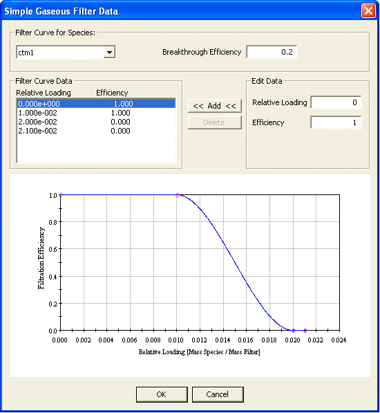

The simple gaseous filter element is made up of a set of species and associated efficiency vs. loading curves. Therefore, the efficiency is a function of the amount of contaminant "absorbed" by the filter. Each filter element can be associated with anywhere between one and the number of species that exist within the current project. Only those species that you have selected to be contaminants will be accounted for when you perform simulations.
Name: A unique name you want to use to identify the filter element.
Area: The face area and units of the filter element.
Depth: The depth of the filter element along the axis of airflow.
Density: The density of the filter media.
Area, Depth and Density are currently used to calculate the mass of the filter media which is in turn used to calculate filter loading.
Description: Use this field to provide a more detailed description of the filter element.
Edit Element Data: Select to define the specific properties of the filter element.
Filter Curve Data: This is a list of relative loading and filter efficiency data pairs used to define the filter curve for the currently selected species (see figure below). Once you have entered at least three data points, ContamW will attempt to calculate a cubic spline fit to the points. If there are any errors in the spline fit procedure, you will be notified and the offending portion of the curve will be highlighted.

Species: This is a list of all the species in either the current project or library file depending on whether you are editing project data or library data. Select the species for which you want to display/edit filter curve data.
Breakthrough Efficiency: Set the breakthrough efficiency for each species. This value will be used during simulation to report if and when the filter efficiency drops below this value. Breakthrough is reported to the Contaminant Summary simulation result file (see Results Files in the Working with Results section).
Filter Curve Data: This is the list of data points you create from which a filter curve is generated using the cubic spline fit method. A minimum of four data points is required before a curve will be generated. The space below will provide a plot of Relative Loading vs. Filter Efficiency. Relative loading is the ratio of Mass of contaminant accumulated by the filter to the Mass of the filter.
Use the Relative Loading and Efficiency data entry fields to set and modify the Filter Curve Data list along with the Add and Delete buttons.